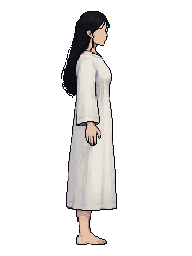
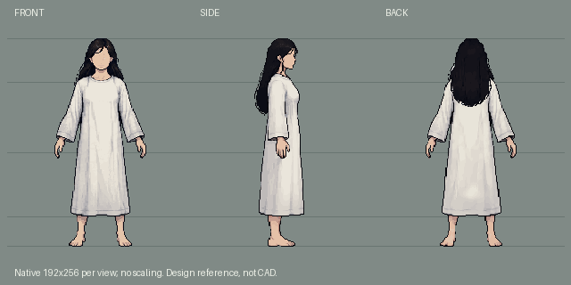
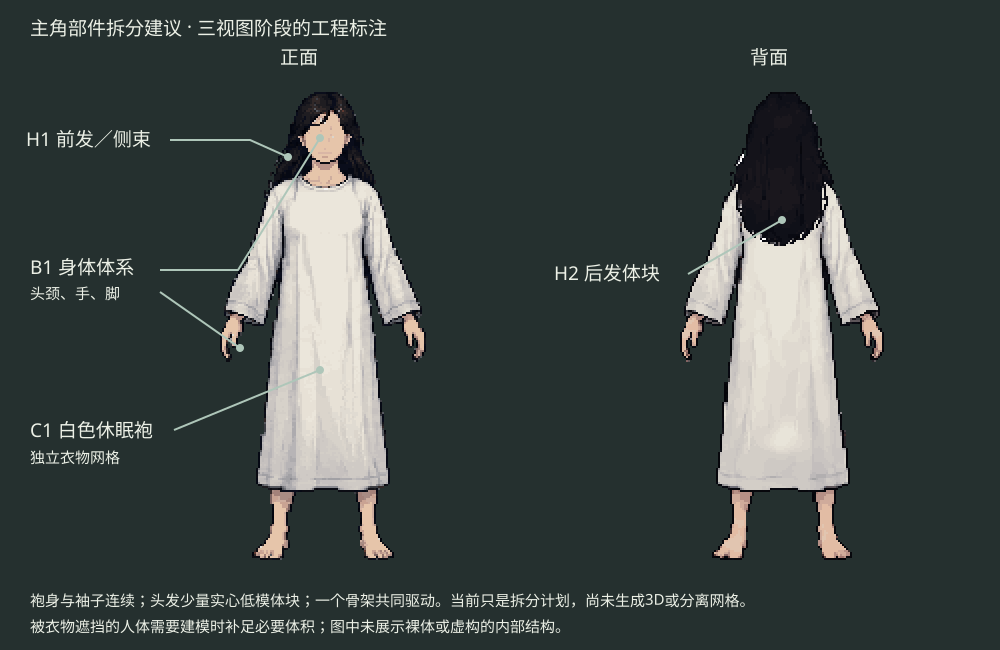

正面沿用已认可v2原文件。侧／背由PixelLab分别以该图为唯一图像输入生成，两次请求，实际18 generations。每张192×256原生，头顶y11、脚底最后一行y244，未缩放或拉伸；白袍、弱五官、浅肤色与低A姿势作为共同依据。
本轮交付是造型三视图和部件建议，尚未建模。后发、衣服背面等首次可见结构是候选设计，3D阶段继续检查体积、遮挡与动作。头顶／脚底对齐不代表所有隐藏关节或衣物褶皱都达到CAD精度。
来源与检查 · 并排PNG · 部件标注SVG · 正面Aseprite · 侧面Aseprite · 背面Aseprite


完整人物参考用于统一造型。身体、白袍和头发在后续Blender阶段保留可独立编辑的网格／分组；不能假设AI自动生成可动画的服装分层。